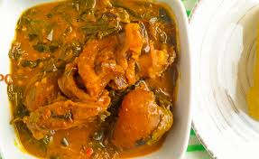

ORA SOUP RECIPE

Description
Ora (Oha) soup is native to the South Eastern Nigeria. It is a very traditional soup similar to the bitterleaf soup but cooked with Ora leaves. Ora (Oha) Soup is special because the tender ora leaves used in preparing this soup recipe are seasonal unlike their bitterleaf counterpart which can be found all year round.
Ingredients
- Vegetable: Ora leaves
- 8 small corms cocoyam
- 3 cooking spoons Red Palm Oil
- Assorted Beef: Includes best cut, shaki (cow tripe)
- Assorted Fish: Dry Fish and Stock Fish
- Chilli pepper, salt and crayfish (to taste)
- 2 Stock cubes
- 1 teaspoon Ogiri Igbo
Steps
- Boil the shaki (cow tripe), stock fish and dry fish in 1 litre of water till they are well done. First sign of a done shaki is that the cuts will start curling on itself.
- Wash the beef and add to the pot of shaki etc. and continue cooking. When the meat is done, add 2 stock cubes and cook for 5 minutes
- Add the pepper, ogiri Igbo and ground crayfish and cook for 10 minutes. Add the cocoyam paste in small lumps and then the palm oil.
- Cover the pot and leave to cook on high heat till all the cocoyam lumps have dissolved. You can add more water if you feel that the soup is too thick.
- Add the ora (oha) leaves and leave to cook for about 5 minutes
- Add salt to taste, stir and the soup is ready!